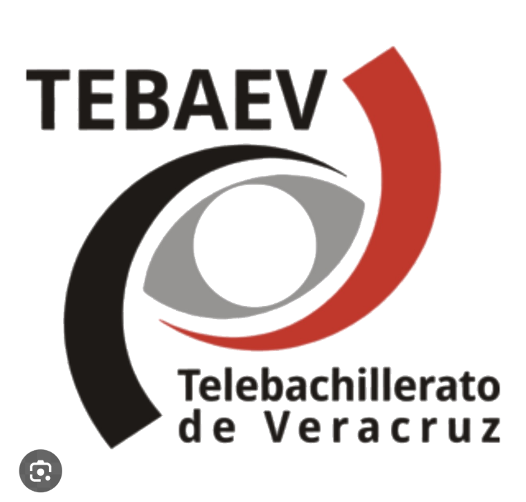

TELEBACHILLERATO
POLUTLA PROYECTO ESCOLAR
POLUTLA PROYECTO ESCOLAR
Traductor Totonaco–Español
PROYECTO ESCOLAR
Busca palabras en español o totonaco y descubre su traducción.
Escribe una palabra para ver su traducción.
Palabra destacada
Paxni
Puerco
—
Traducciones
disponibles
disponibles
—
Visitas
totales
totales
—
Visitantes únicos
estimados
estimados
Proponer una palabra
Ayúdanos a enriquecer el Traductor Totonaco–Español. Todas las propuestas serán revisadas antes de publicarse.